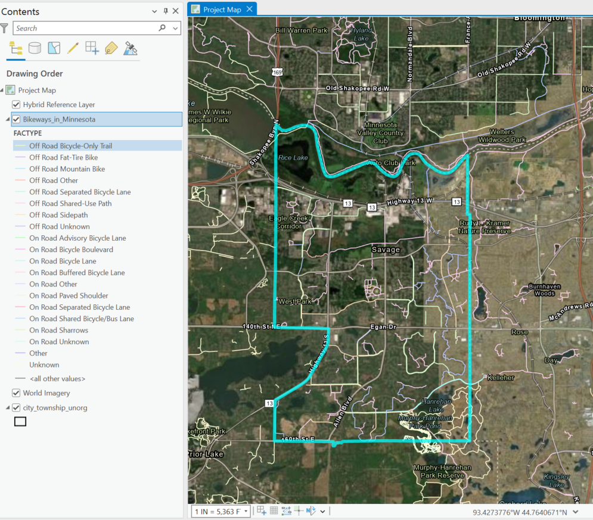

- Multiple Shapefile data sources access programmatically online and loaded into a geodatabase in Arcpy,
- The polygon and line feature data were programatically loaded onto an existing project map aprx file
- Shown is the resulting map of this process zoomed into the city of Savage,MN
What is Arcpy?:¶
Reminder: Arcpy is a Python library for automating GIS tasks in Arc GIS Pro
- Collection of modules, functions, and classes from the ArcGIS toolbox
- It allows you to perform geoprocessing, analysis, data management and mapping automation using python
In [1]:
import arcpy # allows for access to ArcGIS pro geoprocessing tools and workflow automation
import os # enables interaction with local system resources (paths to folders and files)
import requests # access data from the web
import zipfile ## need this to process and extract downloaded zipfiles later on
import pandas as pd ## use to check spreadsheet formatting
initial_dir= os.getcwd() # capture the initial directory before setting environment for arcpy
print("Initial working directory: ", initial_dir)
In [2]:
### BE SURE TO INSTALL MAGIC LIBRARY FIRST for filetype validation example below :
# step1 activate arcgispro-py3 environment: conda activate "C:\Program Files\ArcGIS\Pro\bin\Python\envs\arcgispro-py3"
# step2 install library: pip install python-magic-bin on windows, for unix system use conda install -c conda-forge python-magic
import magic ## to validate file type requested from web
What we will do this time:¶
- Use custom functions to list feature classes, download and load shapefile programmatically, etc
- Create new functions (e.g.,using the request library to pull shape file from MN GeoCommons)
- Automate loading of new data onto a map of an existing ArcGIS project
Create and re-use Custom Functions to Save time¶
- When you create a python script, the functions within those scripts can be loaded into other scripts
- To import your script, do as you would any library in python
if your script is called my_script.py, then:
python import my_script as ms
Now the functions within this script are available to use
python ms.my_function()
- If you would like these tools to test or follow along download the script file here: Download
In [4]:
## We have such a script to use
# So, let's load in our custom tool
import custom_arcpy_tools as cat
In [5]:
cat.listFC_dataset_Attributes()
## We purposefully caused an error
# The error is due to workspace not being set in this new notebook or script
In [6]:
### Don't remember the arguments for this function?
### Use function_name??
In [7]:
help(cat.listFC_dataset_Attributes) ## use help(function_name) to get the documentation for the function
In [8]:
## Can use magic commmands in the notebook to get file paths
##
%lsmagic ## lists out all magic commands
Out[8]:
In [9]:
## will use %pwd
# to check our working directory and look for the geodatabase name
%pwd
Out[9]:
In [10]:
# list the files in the current folder
%ls
In [ ]:
## Not here
## Change the directory to the folder with the gdb
In [11]:
%cd ./02 Result
In [ ]:
## Folders for the Processed Results and Output Map doesn't exist, make some folders
In [ ]:
%mkdir "./02 Result" "./03 Map"
In [16]:
# list the files again
%ls
In [17]:
## custom function to create sub-folder within the folder where your script exists
### Project Folder/
## |---Script.py
## |---Subfolder
## check where the script is and make a folder
def get_path_mkfolder(make_folder=False,folder_name=None):
"""Get the path to your script or notebook and optionally creates a folder in at the same level
rootFolder/
|--ScriptFolder/
|---Script.py
|---New Folder
Args:
make_folder (bool, optional): Set to True to make a new folder. Defaults to False.
folder_name (str, optional): Name of the Folder to be created. Defaults to None.
Return:
str: The path of the created folder, or the script directory
"""
try:
script_path=os.path.dirname(os.path.abspath(__file__))
print("Running a python script file here: ", script_path)
if make_folder and folder_name:
subfolder_path = os.path.join(script_path,folder_name)
#check if the folder exists
if not os.path.exist(subfolder_path):
os.makedirs(subfolder_path)# make the folder
print("Created subfolder at: ", subfolder_path)
else:
print("Folder already exists: ",subfolder_path)
return subfolder_path # return subfolder path
print("Script in this folder: ", script_path)
return script_path # return script path
# handle typos, undefined paths
except NameError:
# handle cases where __file__ is not available , user is in a notebook
script_path = initial_dir
print("Running in a notebook here: ", script_path)
if make_folder and folder_name:
subfolder_path = os.path.join(script_path,folder_name)
# check if folder exists
if not os.path.exists(subfolder_path):
os.makedirs(subfolder_path) # create the folder
print("Created subfolder at: ", subfolder_path)
else:
print("Folder already exists: ", subfolder_path)
return subfolder_path
print("Script in this folder: ", script_path)
return script_path
In [18]:
folder_path =get_path_mkfolder(make_folder=True, folder_name="01 Data") # if following along, for consistency with later parts, change to "01 Data"
print("Folder path to use", folder_path)
In [ ]:
## Now we can use this folder to store new inputs, and manage the folder organization
## Here the project already had a defined folder layout, and we could have re-used the 01 Data folder to store new inputs
## rootFolder:
# |---Script.ipynb
# |---01 Data Folder
# |--- .shp files
# |---02 Results Folder
# |--- .gdb
# |--03 Map
# |--04 TestFolder
In [20]:
# prefixing with ! and using cd.. & tree will run system command tree to get a tree like view of the project folder
! tree
Get online data with the Requests library¶
requests.get(url, params= None, **kwargs)¶
- Required argument : url (url to send the request to)
- params(optional, default is None), allows you to pass in query parameters that filter, modify or sort the data you're requesting
- response = response.get("https://some.example.com/data", params ={key:value})
- **kwargs: keyword arguments. A way to pass additional arguments to the request function as a dictionary
- can pass optional keyword arguments, headers, timeout
- Use-case: make customized requests to web pages, API or get files
- Example request with parameters:
- response = response.get("https://some.example.com/data", params={"State":"Minnesota"}, headers="User-Agent":"my-app")
In [23]:
###=================== Automate ShapeFile dataset download: access, download and store new input shapefile dataset from a url
# Ofcourse, we can always navigate to MN Geocommons or elsewhere, click, download and place the zipfile into our data input folder
# Would have to do this every time, i.e., creating folders, navigating to extracted folder, extracting files
# The downloadShapefile Function below accomplishes all this automatically using only the target url, and optional target folder
# Note: it re-uses are previous function to get the script path and use that to create the target folder for storing data
def downloadShapefile(url, target_folder=None):
"""Access and download a shapefile from a url pointing to the shapefile
Args:
url (str): Url of the Shapefile. Uses the requests library to access the file header
handles large file size by not streaming all content into memory if the file is above 200 megabytes
downloads the zip file and then extracts to a local path
target_folder(str, optional): path to the folder where files should be stored.
target_folder defaults to "01 Data" which is created in the same folder where the script exists
Returns:
Tuple of File paths, str: Returns the path to the downloaded zip file
"""
try:
# Set up folders where data will be stored
data_folder = target_folder if target_folder else get_path_mkfolder(True, "01 Data")
print("Subfolder will be created within: ", data_folder)
# Create folders for the zipfile download and to hold the extracted files
file_path = os.path.join(data_folder, r"ShapeFile_Inputs\downloadedData.zip")
extracted_zipFolder = os.path.join(data_folder, r"ShapeFile_Inputs\ExtractedZip")
# Check folders exist
if not os.path.exists(os.path.dirname(file_path)):
os.makedirs(os.path.dirname(file_path)) # make the folder to hold the download if it does not exists
print("Set the path for the download to: ", file_path)
if not os.path.exists(extracted_zipFolder):
os.makedirs(extracted_zipFolder) # make the folder to hold the extracted files if it does not exists
print("Set the path for Extracted zip files to", extracted_zipFolder)
else:
print("Extracted Zip folder exists, please validate the output exists: ", extracted_zipFolder)
# get the file size
response_head= requests.head(url)
if 'Content-Length' in response_head.headers:
response_header= response_head.headers
file_size = response_header['Content-Length']
file_size_mb= round(int(file_size) / (1000000)) # convert bytes to megabytes
print(f"Shapefile Data File size ~: {file_size_mb} megabytes")
else:
print("Content length header not found in response. Proceeding with download")
# check file size
if file_size_mb <200:
# Download file
response= requests.get(url)
with open(file_path, "wb") as f:
f.write(response.content)
else: # Download file in chunks
response = requests.get(url, stream=True)
with open(file_path, "wb") as f:
for chunk in response.iter_content(chunk_size=65536): # chunk size to load into memory from the response
if chunk:
chunk.write(response.content)
print("Download Successful")
## Validate the filetype is zip
if magic.from_file(file_path, mime=True) == "application/zip": # extracts, checks the filetype
print("Extracting data from zip file...")
# read the zip file
with zipfile.ZipFile(file_path, "r") as zip_f:
zip_f.extractall(extracted_zipFolder) # extract the zipfile to the target folder
print("Extraction complete. Files extracted to", extracted_zipFolder)
else:
print("Error : Downloaded file is not a valid zip file")
return None, None
return extracted_zipFolder, file_path # note it returns a tuple that needs to be unpacked for the first element [0]
# handle url request errors
except requests.exceptions.RequestException as e:
print(f"Error occurred during the Download{e}")
return None
# handle general errors
except Exception as e:
print("Unexpected error", e, type(e).__name__)
return None, None
In [24]:
urls =["https://resources.gisdata.mn.gov/pub/gdrs/data/pub/us_mn_state_dot/bdry_mn_city_township_unorg/shp_bdry_mn_city_township_unorg.zip","https://resources.gisdata.mn.gov/pub/gdrs/data/pub/us_mn_state_dot/trans_bikeway/shp_trans_bikeway.zip"]
# returns a tuple of paths that are useful for easily accessing the extracted shapefiles and zipfile download itself
try:
for url in urls:
extracted_zipFolder = downloadShapefile(url)[0]
# take the first item in the tuple to store the location of the shapefiles
except Exception as e:
print("Error occured", e, type(e).__name__)
In [25]:
print(extracted_zipFolder)
In [ ]:
# We now have the dataset stored locally, if done regularly could modify this download to occur on a regular schedule
# example: download shapefile dataset from a url weekly, daily
In [29]:
### Change the folder to store the result
%cd "./02 Result"
In [ ]:
### Use the path of the Result folder and Create new GDB
outfolder= r"c:\Projects\my_git_pages_website\Py-and-Sky-Labs\content\GIS\02 Result"
gdb_name= "savageMN_BikePaths.gdb"
gdb_path= os.path.join(outfolder, gdb_name)
if not os.path.exists(gdb_path):
arcpy.management.CreateFileGDB(outfolder,gdb_name)
print("Successfully created Geodatabase")
else:
print("Geodatabase already exists")
In [ ]:
gdb_path= os.path.join(outfolder, gdb_name)
print("Geodatabase Full path is here: ", gdb_path)
In [ ]:
### Set workspace to geodatabase
arcpy.env.workspace = gdb_path
wksp = gdb_path
arcpy.env.overwriteOutput= True
In [ ]:
# quick reminder of where our current workspace is set
print("GeoDatabase is here: " , wksp)
In [36]:
## Search the documentation for arcpy.conversion.FeatureClassToGeodatabase()
from IPython.display import IFrame # a module for controlling notebook outputs, allows you to embed images, video, webpages with the Iframe function
# ArcGIS Pro documentation URL for a specific tool
tool_url = "https://pro.arcgis.com/en/pro-app/latest/tool-reference/conversion/feature-class-to-geodatabase.htm"
# Display the documentation inside Jupyter Notebook
IFrame(tool_url, width="100%", height="600px") # iframe can be used to display local or online webpages, documents, reports, visualizations , videos
Out[36]:
In [42]:
###========================== Load all the shapefiles into a GDB
def loadShapefilesToGDB(gdb_path, shapefile_inputs):
"""Loads all shapefiles in a folder into a geodatabase
Args:
gdb_path (str): Path to the geodatabase
shapefile_inputs (str): Path to the folder holding the shapefiles
Returns:
list: Returns a list of shapefile paths that were used for loading into the GDB, or an emtpy list if no shapefiles were processed
"""
try:
# use extracted zipfiles if the path exists, otherise use the specified path to the files
if not shapefile_inputs or not os.path.exists(shapefile_inputs):
print("Invalid path to shapefile folder provided")
return [] # return empty list
# Loop through the folder with extracted files and compile a list of all the shape file paths
shapefile_list = [] # start an empty list to hold .shp files
for f in os.listdir(shapefile_inputs):
if f.endswith(".shp"):
full_shp_path= os.path.join(shapefile_inputs,f) # get the full path for each file
shapefile_list.append(full_shp_path) # add to a list
###================================ Batch Convert shapefile to Feature classes in the Gdb
# check the list of shp files exists
if not shapefile_list:
print("no shape files found for extraction")
return []
else:
## Load the shapefiles into the gdb
### TOOL: arcpy.conversion.FeatureClassToGeodatabase(Input_Features, Output_Geodatabase)
arcpy.conversion.FeatureClassToGeodatabase(shapefile_list,gdb_path)
print(f" Successfully Loaded shapefiles into into the {gdb_path}")
return shapefile_list
except Exception as e:
print("Error Loading Shapefiles into the GDB ", e, type(e).__name__)
except arcpy.ExecuteError:
print("Arcpy Error: ", arcpy.GetMessages(2))
In [43]:
# we do not need the input shapefile paths, but for demonstration the list is extracted
loaded_shapefiles=loadShapefilesToGDB(wksp,extracted_zipFolder)
print("These files were loaded into the GDB", loaded_shapefiles)
In [46]:
## Check the gdb
arcpy.ListFeatureClasses()
Out[46]:
In [ ]:
## We successfully programmatically retrieved datasets from MN GeoCommons and loaded them into a Geodatabase in ArcGIS Pro
In [ ]:
## Use the Describe Object to access properties of a Feature class like its Spatial Reference
## Get all the fc classes from the gdb
list_fc = arcpy.ListFeatureClasses()
for fc in list_fc:
desc= arcpy.Describe(fc)
sr = desc.SpatialReference
print(f"Feature class: , {fc}, Spatial Reference name :, {sr.name}, Spatial Ref Type : {sr.type}, Geometry{desc.shapetype}, WKID: {sr.factorycode}")
print("-"*150,"\n") # add line and space between prints
In [48]:
# We already have a custom function that gathers key feature class attributes and prints the workspace to avoid repetitive coding
cat.listFC_dataset_Attributes()
Programmtically Working with Maps¶
- We can automate the display of new data using arcpy.mp module
####
arcpy.mp.ArcGISProject()
In [ ]:
## check the current path
In [49]:
%pwd
Out[49]:
In [ ]:
### check directory structrue, change the path to the map file
In [53]:
!cd.. & tree
In [62]:
%cd ..
In [64]:
%cd "./03 Map"
In [65]:
%pwd
Out[65]:
In [67]:
!dir
In [79]:
### Set the path to the folder and file holding the map
map_folder= r"c:\Projects\my_git_pages_website\Py-and-Sky-Labs\content\GIS\03 Map"
aprx_name = "TemplateProject.aprx"
aprx_path = os.path.join(map_folder,aprx_name)
if not os.path.exists(aprx_path):
print("Project path does not exist", os.path.exists(aprx_path))
# Output .aprx with new name to avoid locks or read issues
new_aprx_name= "savage_bikePaths_edit.aprx"
new_aprx_path = os.path.join(map_folder,new_aprx_name)
## Set gdb path
outfolder= r"c:\Projects\my_git_pages_website\Py-and-Sky-Labs\content\GIS\02 Result"
gdb_name= "savageMN_BikePaths.gdb"
gdb_path= os.path.join(outfolder, gdb_name)
# Load the ArcGIS Pro project
aprx = arcpy.mp.ArcGISProject(aprx_path)
## Print map names choose the map to add layers to
print([m.name for m in aprx.listMaps()])
print("\n")
# Pick the map to load
map_object = aprx.listMaps("Project Map")[0] ## Use arcpy.listMaps("MapName")[0] if you only have one map
print(arcpy.ListFeatureClasses())
print("\n")
feature_classes = arcpy.ListFeatureClasses()
print(gdb_path)
print("\n")
try:
for fc in feature_classes:
fc_path = os.path.join(gdb_path,fc) # store that path to the fc
map_object.addDataFromPath(fc_path)
# Save the changes to the project file
aprx.saveACopy(new_aprx_path)
print("Successfully loaded the layers onto the project and saved the map")
except Exception as e:
print("Error occured: ", e, type(e).__name__)
except arcpy.ExecuteError:
print("Arcpy Error occured: ", arcpy.GetMessages(2))
# optional delete to avoid locks to the project
finally:
del aprx